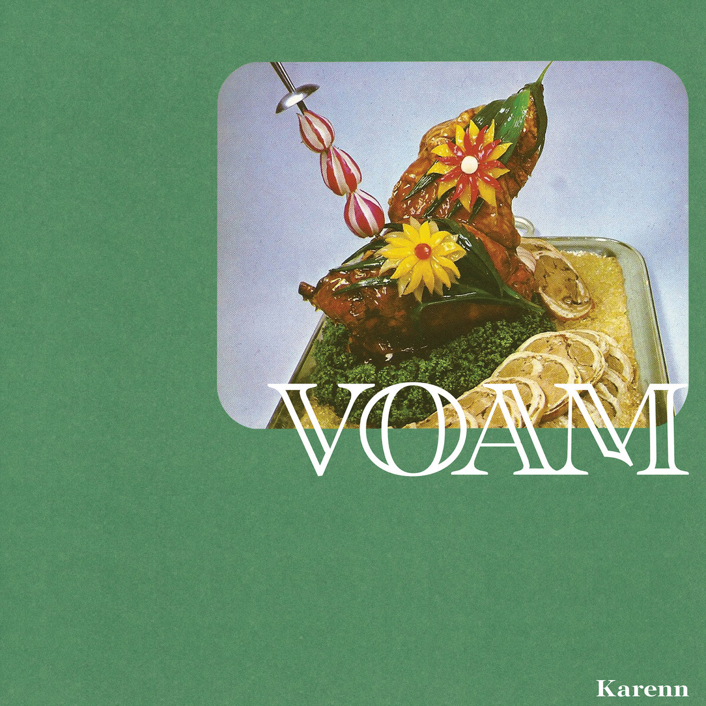

Julian's Secret Domain - Music Reviews
Back to music reviews
Karenn - Grapefruit Regret (2019)
industrial techno
Eight tracks of organic, slippery analogue techno from the duo of Blawan and Pariah. Standout tracks Strawbs and Raz slither along with powerfully venomous rhythms, while the masticated trance leads of Crush the Mushrooms inject some lighthearted undertones to this record.
3.5/5